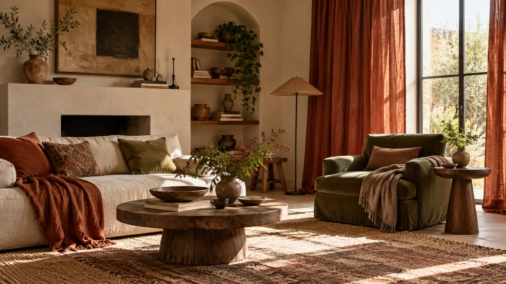

От замера до навески
Подбор, пошив и оформление окна
 текстильное ательеОбсудить мой интерьер ↗
текстильное ательеОбсудить мой интерьер ↗
Текстильное ателье · Королёв · с 2002 года
Подберём ткани, сошьём шторы и оформим окна — от первого разговора до навески. С вниманием к свету, фактурам и вашей жизни.
Собственный пошив · Москва и Московская область

Подбор, пошив и оформление окна
Работаем с текстилем с 2002 года
Ткань, свет и детали в одном решении
Настоящие работы мастерской
 ↗
↗Шторы и тюль для уютной гостиной
 ↗
↗Сдержанное оформление окна
 ↗
↗Текстиль в детской
Фотографии из архива Драйдт. Подробные истории проектов — в портфолио.
Что мы делаем
Как проходит заказ
Поможем пройти путь от идеи
до готового оформления.
01Вы отправляете фото и рассказываете о задаче. Обсуждаем ткани, модель и замер.
 02
02Подбираем материалы и рассчитываем состав заказа. Согласуем стоимость и договор.
 03
03Шьём в собственном цехе. Согласуем доставку, установку карнизов и навеску.
Цена зависит от ткани, размеров, модели и состава работ. Пришлите фото окна и примерные размеры — обсудим данные для расчёта.
Начать с фото комнаты ↗Лично знакомимся
С 2002 года мастерская занимается шторами и текстильным оформлением. Подбираем материалы, шьём в собственном цехе и помогаем довести решение до готового интерьера.
О мастерской ↗Перед знакомством
Это нормально. Начните с фото комнаты и расскажите, что вам нравится и что хочется изменить. Обсудим подходящие варианты.
Для первого обсуждения достаточно фото и примерных размеров. Для окончательного расчёта и пошива нужны точные замеры.
Ткань, её расход, модель штор, сложность пошива и дополнительные работы. Состав заказа и стоимость согласуем до пошива.
Первый шаг — знакомство с вашим интерьером
Напишите Татьяне и отправьте фото комнаты либо позвоните в мастерскую. Обсудим оформление и данные для расчёта.
Пришлите фото комнаты в мессенджер или позвоните. Обсудим модель, ткань и данные для расчёта. Условия выезда и замера согласуем при обращении.
Мастерская в Королёве. Работаем с интерьерами в Москве и Московской области.
Приходите знакомиться с тканями
Пн–Сб: 10:00–19:00
Воскресенье — выходной.
Работаем с интерьерами в Москве и Московской области.
Открыть адрес в Яндекс Картах ↗Найдите удобный маршрут до проспекта Космонавтов, 34Б.
Карта загрузится с сервиса Яндекса после нажатия.